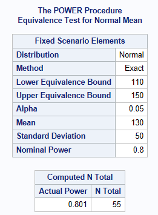
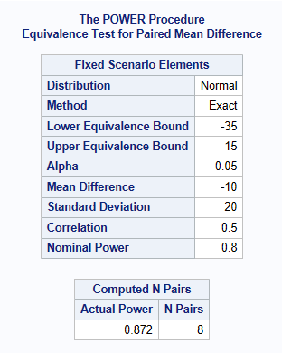

PROC POWER ;
onesamplemeans test=equiv
lower = 110
upper = 150
mean = 130
stddev = 50
ntotal = .
power = 0.8
alpha = 0.05;
RUN;Sample Size for Equivalence Trials in SAS
Introduction
PROC POWER1 can be used for sample size calculations for equivalence testing2. It can calculate sample size for:
one sample test of mean (i.e. 1 treatment mean is equivalent to a target value)
two-sample comparison of means for equality (i.e. testing if 2 treatment means recorded on 2 independent groups of patients are the same, eg. the true mean difference is zero, but within a set tolerance).
two-sample comparison of means for equivalence (i.e. 2 treatment means recorded on 2 independent groups of patients are equivalent, eg, the true mean difference is not necessarily thought to be a difference of zero, but the means are equivalent within a set tolerance). NOTE: PROC POWER ONLY DOES two one sided significant tests (TOST), it cannot do a single 2 sided equivalence test. More info below!
Paired-sample comparison of means (i.e. 2 treatment means recorded on 1 group of patients are equivalent within a set tolerance)
One sample test of proportion (i.e. 1 treatment proportion is equivalent to a target value)
PROC POWER CANNOT calculate sample size for two-sample comparisons of proportions (i.e. 2 treatment proportions recorded on 2 independent groups of patients are equivalent within a set tolerance)
One-sample equivalence test
Suppose a reformulation of a treatment pill, needs to have a weight equivalent to a target value of 130 milligrams. Weight is assumed normally distributed and an acceptable weight is between 110 milligrams and 150 milligrams. The standard deviation of the weight is 50 milligrams. What sample size is needed assuming an alpha level of 5% with 80% power to conclude the weight is within the margin (the tablet weight is equivalent to 130 milligram). The below shows a sample size of 55 pills is required.

Comparing means for parallel design (unpaired)
Next we will look at having 2 independent samples. In the most common scenario SDs are assumed known and the same in both treatment groups.
In example 1, when the true difference between treatment groups is assumed to be equal to 0, then SAS assumes you are doing a 2-sided test, \(H0:|\mu2-\mu1|\geq \theta\) versus \(H1: |\mu2-\mu1|\lt \theta\).
However, in example 2, when the true difference between treatment groups is assumed not to be equal to 0, SAS assumes you are doing two one-sided t-tests (TOST). This is represented by the following 2x null and alternative hypotheses.
\(H0:\mu2-\mu1 \leq -\theta\) or \(\mu2-\mu1 \geq -\theta\) versus \(H1: -\theta \lt \mu2 - \mu1 \lt \theta\)
Example 1: Equality equivalence
Sample size for comparison of 2 independent treatment group means with same known SDs and assuming a true difference between the treatments is zero
It is anticipated that patients will have the same mean diastolic BP of 96 mmHg on both the new drug and the active comparater. It is also anticipated that the SD (ơ) of the diastolic BP is approximately 8 mmHg. The decision is made by clinical to accept equivalence if the difference found between the treatments is less than 5 mmHg. How many patients are required for an 80% power and an overall significance level of 5%?
The below shows a sample size of 45 patients per treatment group is required (90 patients in total). Notice how SAS asks for the lower & upper bounds, these are derived by using the meandiff + /- the acceptable equivalence limit (which is stated as 5 mmHg above).
PROC POWER ;
twosamplemeans test=equiv_diff
lower = 91
upper = 101
meandiff=96
stddev = 8
ntotal = .
power = 0.8
alpha = 0.05;
RUN;As shown below, a total sample size of 90 is recommended, which equates to 45 in each group.
Note: that instead of meandiff=96, and lower=91, upper=101, you can also use: meandiff=0, lower=-5 and upper=5 to get the same answer.
Example 2: TOST Equivalence
Sample size for comparison of 2 independent treatment group mean ratios with same known SDs, ‘true’ difference not believed to be 0 (eg. perhaps a 1% difference), but we want to know if the drugs are equivalent within 5%.
A client is interested in conducting a clinical trial to compare two cholesterol lowering agents for treatment of hypercholesterolemic patients through a parallel design. The primary efficacy parameter is a low-density lipidprotein cholesterol (LDL-C). For establishing equivalence, suppose the true mean difference is 0.01 (1%) and the equivalence limit is 0.05 (5%). Assuming SD = 0.1, how many patients are required for an 80% power and an overall significance level of 5%?
Below shows a sample size of 140 patients in Total (70 per treatment group).
PROC POWER ;
twosamplemeans test=equiv_diff
lower = -0.04
upper = 0.06
meandiff = 0.01
stddev = 0.1
ntotal = .
power = 0.8
alpha = 0.1;
RUN;Comparing means for crossover design (paired)
Here we assume there is no carry-over effect and that the variance is known.
Estimating the within patient variance and correlation.
It is important to differentiate here between the within patient SD and the SD of the difference. We may need to recalculate one to the other, depending on the case.
With no carry-over, then an approximation could be: Variance of the difference = 2x Within Patient Variance. The variance within a patient can be estimated from the within subject residual mean square after fitting the model including visit, period and treatment. For example, using Proc mixed repeated visit / r sub=usubjid, and ods select r, gives you blocks of the estimate R matrix (covariances between residuals).
SAS cannot do sample size in this scenario without also having the within subject correlation. It’s common in this scenario to set this equivalent to 0.5. More investigation is required to determine why this is also need to be specified as in this scenario, the correlation should not be required.
Example
Let’s consider a standard standard two-sequence, two period crossover design for trials to establish therapeutic equivalence between a test drug and a standard therapy. The sponsor is interested in having an 80% power for establishing equivalence. Based on the results from previous trials, it is estimated that the variance (of the difference) is 0.2 (20%). Suppose that the true mean difference is -0.1 (-10%) and the equivalence limit is 0.25 (25%). What is the required sample size, assuming significance level of 5%?
The below shows a sample size of 8 patients is required.
PROC POWER;
pairedmeans test=equiv_diff
lower = -35
upper = 15
meandiff=-10
stddev = 20
npairs = .
corr=0.5
power = 0.8
alpha = 0.05;
RUN;
References
Version
─ Session info ───────────────────────────────────────────────────────────────
setting value
version R version 4.4.2 (2024-10-31)
os Ubuntu 24.04.2 LTS
system x86_64, linux-gnu
ui X11
language (EN)
collate C.UTF-8
ctype C.UTF-8
tz UTC
date 2025-04-28
pandoc 3.6.3 @ /opt/quarto/bin/tools/ (via rmarkdown)
─ Packages ───────────────────────────────────────────────────────────────────
! package * version date (UTC) lib source
R sample_s_superiority <NA> <NA> [?] <NA>
[1] /home/runner/work/CAMIS/CAMIS/renv/library/linux-ubuntu-noble/R-4.4/x86_64-pc-linux-gnu
[2] /opt/R/4.4.2/lib/R/library
R ── Package was removed from disk.
─ External software ──────────────────────────────────────────────────────────
setting value
SAS 9.04.01M7P08062020
──────────────────────────────────────────────────────────────────────────────